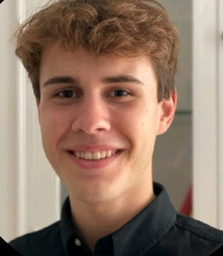
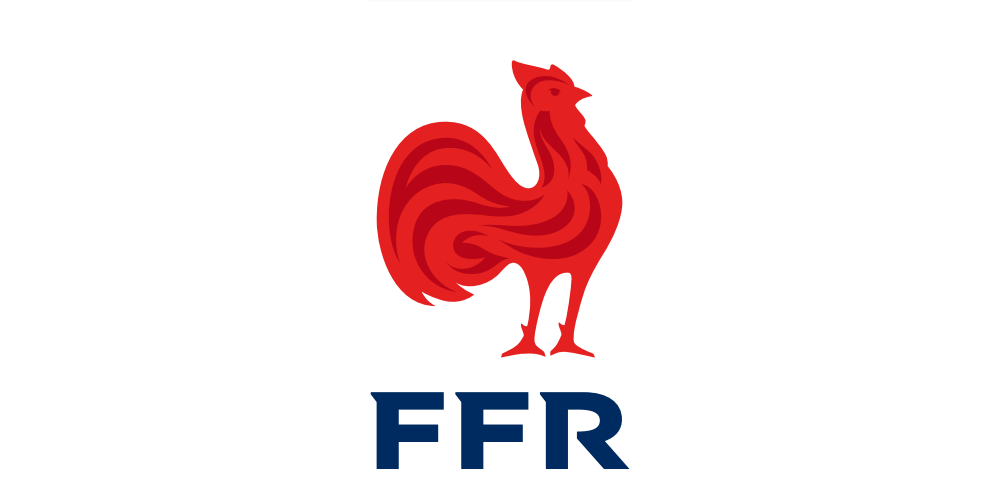

I am in first year at IESEG school of management in Lille. I really like music and going out with my friends.
I am passionate about music. I play the guitar for more than 10 years and I spend my days listening to music, I love rap but I listen to everything. I have a very varied musical culture. My favorite french rapper is Ninho, I had the chance to go see him in concert.
I can't talk about myself without talking about my favorite sport: rugby. I made it when I was a child but I had to stop for lack of time. I would like to join a team next year.

Today, I would like to pass my catch-ups in order to go to second year without difficulty, I would also like to join an association next year or join the sports association of IESEG. Personally, I would like to organize a big trip with lots of friends in South America.